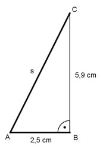

Aufgabe 314 Auf einem Zylinder mit einem Durchmesser von 5 cm und einer Höhe von 6,3 cm sitzen am einen Ende ein 5,9 cm hoher Kegel, am anderen eine Halbkugel mit gleicher Grundfläche wie der Zylinder. Wie groß sind das Volumen V und die Oberfläche O des Körpers? Volumen = Zylinder + Halbkugel + Kegel л * d³ л * rZ² * hK V = л * rZ² * h + -------- + -------------- 12 3 rZ = dZ/2 = 5 cm/2 = 2,5 cm л * 5³ л * 2,5² * 5,9 V = л * 2,5² * 6,3 + --------- + ----------------- cm³ 12 3 V = 123,6 cm³ + 32,7 cm³ + 38,6 cm³ = 194,9 cm³ Berechnung der Kegelmantellinie s:  Satz von Pythagoras im Dreieck ABC: s² = AB² + BC² = 2,5² cm² + 5,9² cm² = 41,1 cm² |√ s = 6,4 cm Oberfläche = = Zylindermantel + Halbkugeloberfläche + Kegelmantel d² * л O = 2 * л * rZ * h + --------- + л * rZ * s 2 5² * л O = 2 * л * 2,5 * 6,3 cm + --------- + л * 2,5 * 6,4 cm² 2 O = 98,9 cm² + 39,3 cm² + 50,2 cm² = 188,4 cm²